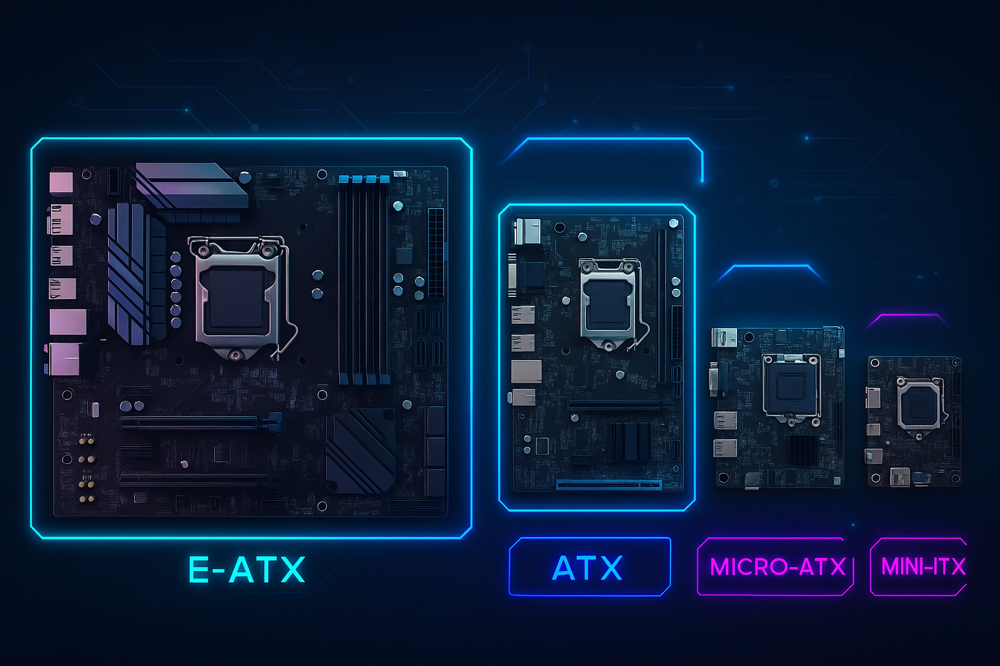

Índice de Placas Base

Las placas base se fabrican en distintos formatos según el tamaño del chasis y la capacidad de expansión.
• E-ATX (Extended ATX) – 330 × 305 mm. Placas muy grandes para estaciones de trabajo y PCs extremos.
• ATX – 305 × 244 mm. El estándar más usado por ofrecer equilibrio entre tamaño y ranuras.
• Micro-ATX – 244 × 244 mm. Compacta, mantiene buena capacidad de ampliación.
• Mini-ITX – 170 × 170 mm. Muy pequeña, ideal para PCs compactos.
E-ATX 330×305 mm
ATX 305×244 mm
Micro-ATX 244×244 mm
Mini-ITX 170×170 mm